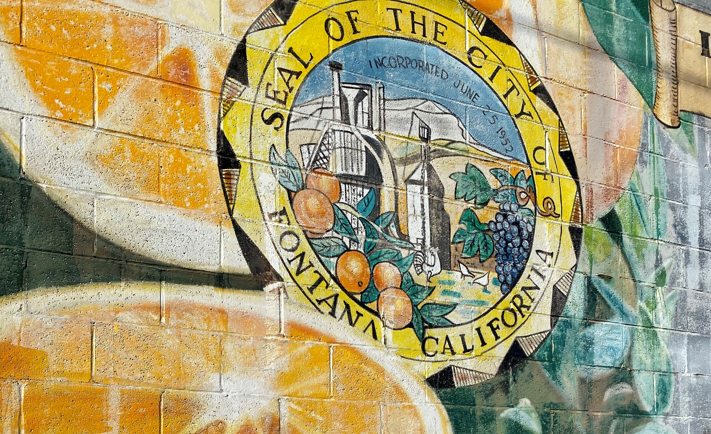

Challenges + Solutions
This semester, our team of eight graduate students studying transportation policy, engineering, and planning at UC Berkeley's Department of City & Regional Planning conducted a semester-long research project studying the externalities, both positive and negative, of the warehousing and transportation industry in Fontana, California. Our team completed an array of qualitative and quantitative analyses, including a site visit to Fontana, a deep literature and policy review, a local and regional economic analysis, and explorations into air pollution, truck electrification, and road safety. This report is a culmination of our work.
This is a critical moment to examine the warehousing and logistics industry in the Inland Empire. COVID-19 has accelerated consumer shifts towards e-commerce, leading to an ever greater reliance on the people and places that are foundational to goods movement. In recent months, we have also seen firsthand what happens when the supply chain is disrupted and the global ramifications this has for prices and the availability of basic consumer goods. Warehousing is the primary economic regional cluster based on the data; it's undeniable that they provide jobs but analyses indicate that most of these jobs, irrespective of employer, do not offer adequate pay, stability, or benefits to sustain individuals and their families. Projections suggest it's these low paying jobs that will continue to grow in the region. Despite these challenges, electric vehicle technology is rapidly advancing, creating opportunities to reduce some environmental impacts of goods movement.
The City of Fontana is increasingly at odds with community groups who are rightly concerned about future warehouse development and the impact of development on their health and the quality of life in Fontana. This has resulted in expensive and lengthy litigation and lost opportunities for the city to work with community groups in a proactive, collaborative, and committed way.
There is also an appetite for new regulation in Fontana and the City has proposed a new local ordinance - the Industrial Commerce Center Sustainability Standards Ordinance - to regulate the warehousing industry. Given that the ordinance has not yet been passed by council, the City is still in the window of opportunity to amend the proposed ordinance to increase transparency in the development process and strengthen environmental and community protections.
We have organized our research into this executive summary and seven additional chapters listed below:
- Executive Summary
- Introduction
- Policy Overview & Analysis
- State of the Economy
- Labor & Coalition Building
- Air Quality and Pollution Monitoring and Action
- Modeling Sustainable Trucking Practices
- Road Safety
As a major logistics center in the global supply chain, our team believes Fontana can lead the region and industry forward in a sustainable, equitable, and resilient way by advocating for higher sustainability standards, labor rights protections, and innovative technologies and regulations to reduce emissions in the transportation of goods.
From all of our work, it feels very clear to us that local residents care very deeply about the warehouses, the logistics industry, and everything they entail. It is unique, frankly, to have so many residents engaged and almost demanding participation in civic life. To respect and harness that energy, we believe that the city can create committed, ongoing proactive processes for these people to engage with, to share their ideas, and to work with elected officials and other stakeholders to negotiate solutions. Hence, in addition to our technical analyses, we lay out direct actions various stakeholders can take to leverage the community’s assets.
Below is a table of our full list of recommendations, organized by section. For each recommendation we have assigned a priority value, ranging from the lowest (+) to the highest (+++). Although we believe that all the recommendations should be moved forward, some are more pressing or easier to implement and therefore warrant a higher priority. We have also identified the entities responsible for implementation of each recommendation. Most are directed at the City of Fontana, but many will require regional collaboration.
| Recommendation | Priority | Implementing Entities | |
| Section 3: Policy Analysis | |||
| 3.1 | Remove the categorical CEQA exemption from Fontana's Industrial Commerce Center Sustainability Standards Ordinance | +++ | City of Fontana |
| 3.2 | Further strengthen environmental standards in the Industrial Commerce Center Sustainability Standards Ordinance | +++ | City of Fontana |
| 3.3 | Adopt a good neighbor policy | ++ | City of Fontana |
| 3.4 | Advocate for Federal clean truck legislation | + | City of Fontana |
| 3.5 | Support the Indirect Source Rule through current litigation process | ++ | City of Fontana |
| 3.6 | Implement a warehouse moratorium | +++ | City of Fontana |
| Section 4: State of the Economy | |||
| 4.1a | Direct development impact fees and warehouse mitigation fees towards community benefits | +++ | City of Fontana |
| 4.1b | Require warehouse and distribution centers to sign community benefits agreements (CBAs) and project labor agreements (PLAs) | +++ | City of Fontana |
| 4.1c | Become a more hospitable environment to union formation | +++ | City of Fontana |
| 4.1d | Work together with neighboring municipalities in the Inland Empire on regulations | ++ | City of Fontana |
| 4.2 | Documentation of “Slush Fund” processes | +++ | City of Fontana |
| 4.3 | Direct “Slush Fund” funds to programs to mitigate impacts of warehouse construction and operations | ++ | City of Fontana |
| 4.4 | Build collaborative relationships between educational institutions and employers | + | City of Fontana |
| 4.5 | Avoid excessive rezoning of land to industrial uses | + | City of Fontana |
| 4.6 | Enforce City rules and regulations | +++ | City of Fontana |
| 4.7 | Promote “just growth” in warehousing and transportation cluster | ++ | City of Fontana |
| 4.8 | Develop an Advanced Green Manufacturing Industry Cluster | + | City of Fontana |
| 4.9a | Conduct research on sales and property tax policy reform | + | San Bernardino County, SCAG, State |
| 4.9b | Share sales tax revenue regionally | + | San Bernardino County, SCAG, State |
| 4.9c | Reform property tax policy, including alternative ways to allocate property tax revenue | + | State |
| Section 5: Labor & Coalition Building | |||
| 5.1 | Work with regional partners to raise the minimum wage | +++ | City of Fontana; San Bernardino County |
| 5.2a | Work to increase Cal/OSHA funding | + | City of Fontana; State of California |
| 5.2b | Create local mechanisms to enforce labor laws | ++ | City of Fontana |
| 5.3 | Commit in good faith to working with advocacy nonprofits and concerned residents | +++ | City of Fontana |
| 5.3a | Invest in a mediation process among important actors, including development interests and impacted residents. Commit to acting on its conclusions. | +++ | City of Fontana in coordination with concerned residents groups, warehousing representatives and others |
| 5.3b | Develop more extensive engagement practices to ensure community support around future development | +++ | City of Fontana |
| Section 6: Air Quality and Pollution | |||
| 6.1 | Invest in air pollution monitoring and sensors | +++ | City of Fontana; Chamber of Commerce |
| 6.2 | Incorporate air pollution monitoring into community engagement initiatives, including in partnership with STEM education | ++ | City of Fontana; Fontana Unified School District |
| 6.3 | Require air pollution monitoring at logistics industry facilities | +++ | City of Fontana |
| 6.4 | Apply for funding and additional support of air monitoring | + | City of Fontana; Chamber of Commerce |
| Section 7: Modeling Sustainable Trucking Practices | |||
| 7.1 | Incentivize Heavy-Heavy truck fleet conversion | ++ | City of Fontana |
| 7.2 | Leave charger allocation to be addressed by the private sector | + | City of Fontana |
| 7.3 | Engage with community to identify an updated network of truck routes | +++ | City of Fontana |
| 7.4 | Form an incubator to focus on regional problems and solutions | ++ | City of Fontana; Chamber of Commerce |
| 7.5 | Apply to federal and state funding sources for electrification | ++ | City of Fontana; Local Businesses |
| 7.6 | Invest in and promote alternative solutions, including congestion pricing and electrified short-haul rail | + | City of Fontana |
| Section 8: Road Safety | |||
| 8.1 | Actively maintain an open data portal database with documents and files to support their planning initiatives | +++ | City of Fontana |
| 8.2 | Collect additional community input to identify locations in the city where Fontana residents feel unsafe and where traffic safety investment should be directed | +++ | City of Fontana |
| 8.3 | Improve the existing street network to calm traffic in particularly dangerous locations | +++ | City of Fontana |
| 8.4 | Partner with religious and faith-based institutions to help fight homelessness | + | City of Fontana; Religious Institutions |
| 8.5 | Leverage the city’s Safe Routes to School partnership to create safer streets and encourage more students to walk and bike to and from school | ++ | City of Fontana; Fontana Unified School Disctict |
| 8.6 | Create a Local Roadway Safety Plan using state funding | ++ | City of Fontana; CalTrans |
| 8.7 | Stay up to date on the latest “best practices” of road safety | + | City of Fontana |
| 8.8 | Commit to Vision Zero goals and pledge to eliminate all serious and fatal injuries on the road | + | City of Fontana |